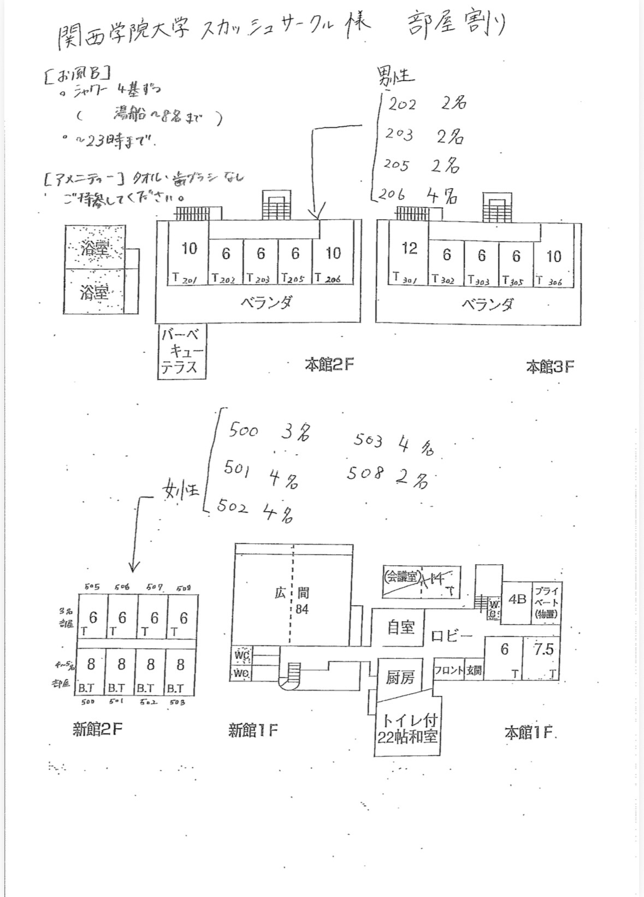

合宿のしおり
集合場所
〒663-8204 兵庫県西宮市高松町２−２２ 兵庫県立芸術文化センター付近
9:30
に集合してください
宿泊場所＆観光地
民宿サンポート白浜
部屋割り

白良浜
白浜エネルギーランド
とれとれ市場
持ち物
- タオル
- 歯ブラシ
- 水着（泳ぎたい人）
- 昼食代（１日目、２日目、３日目）
- 運動できる服
- 体育館シューズ
予定表
| １日目 |
| 9:30 |
集合 |
| 10:00 |
バス出発 |
| 12:55 |
白浜到着 |
| 13:00～17:00 |
運動会 |
| 18:00～21:00 |
BBQ |
| 21:00～23:00 |
自由時間(入浴もこの間に) |
| 23:00～ |
就寝 |
| ２日目 |
| 8:00～9:00 |
朝食（宿） |
| 10:00～ |
出発 |
| 11:00～14:00 |
白浜エネルギーランド（昼食） |
| 14:00～17:00 |
白良浜 |
| 17:00～19:00 |
入浴・自由時間 |
| 19:00～23:00 |
夕食 |
| 23:00～ |
就寝 |
| ３日目 |
| 8:00～9:00 |
朝食（宿） |
| 9:00～10:30 |
帰宅準備 |
| 11:00～ |
バス出発 |
| 11:10～13:00 |
とれとれ市場（観光＆昼食） |
| 13:10～ |
バス出発 |
| 16:00 |
到着 |
運動会スケジュール
| 時間 |
種目 |
| 13:00～13:30 |
自己紹介・準備運動 |
| 13:30～14:00 |
大縄跳び |
| 14:10～14:40 |
ムカデ競争 |
| 15:00～15:20 |
リレー |
| 15:30～16:00 |
気配切り |
| 16:10～16:40 |
ドッチボール |
| 16:40～17:00 |
後片付け |